This project analyzes an e-commerce customer dataset that I transformed into a relational database. The goal: identify high-value customers, uncover satisfaction drivers, and support smarter business decisions. Each query below includes a short comment explaining its business value covering trends in spending, satisfaction, membership tiers, and location-based behavior.
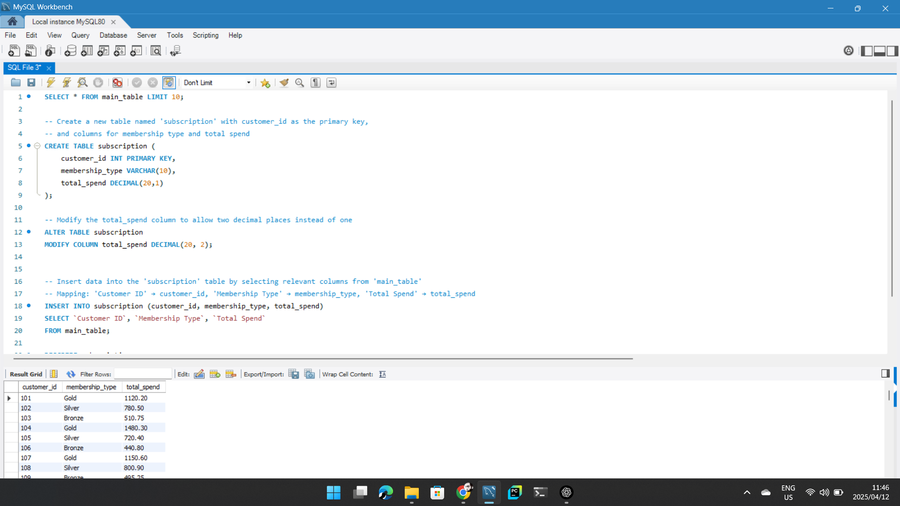
This MySQL Workbench screenshot shows a SQL workflow: first, retrieving sample entries, then creating and modifying a new table called subscription, and finally displaying the inserted data.
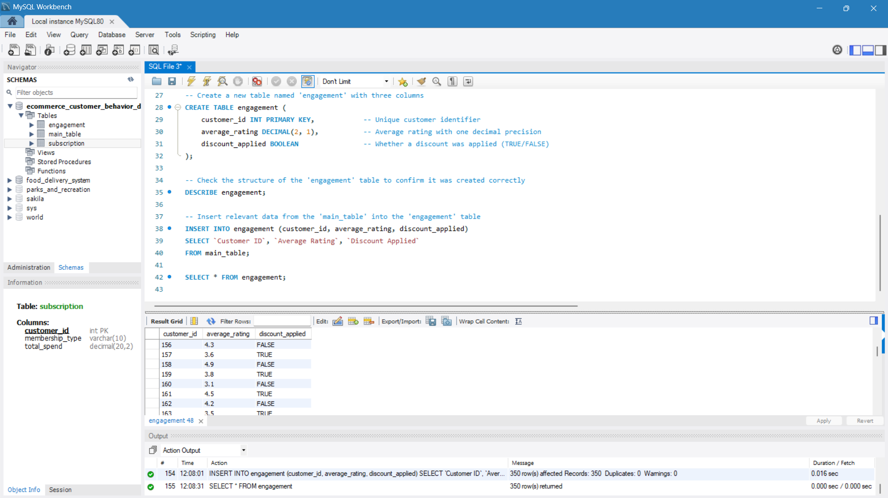
This screenshot from MySQL Workbench demonstrates a SQL workflow: it creates an engagement table with customer_id, average_rating, and discount_applied columns, inserts data from main_table, and retrieves the results in a grid.
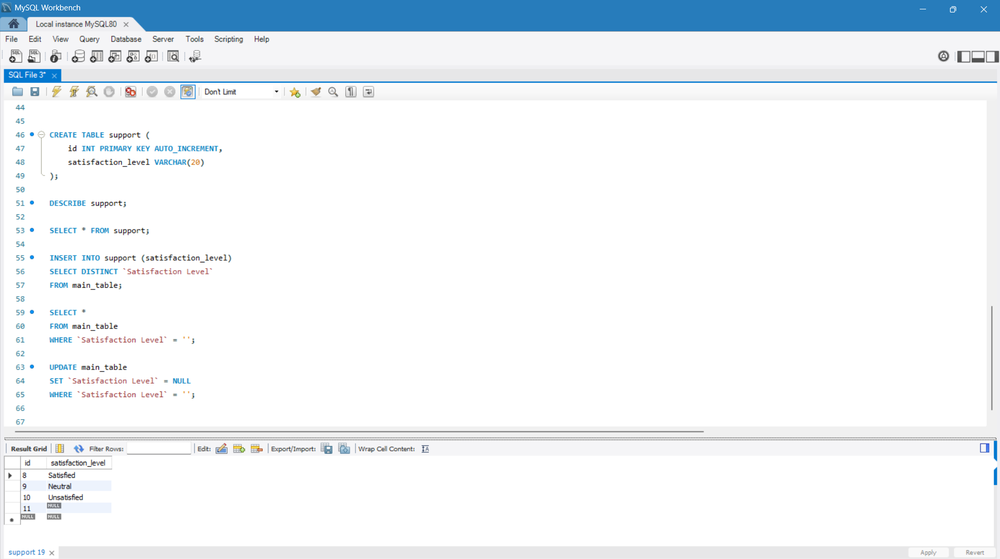
This MySQL Workbench screenshot shows a concise SQL workflow: it creates a support table, populates it with distinct satisfaction levels from another table, and updates blanks to NULL. The result grid displays entries like "Satisfied," "Neutral," and "Unsatisfied."
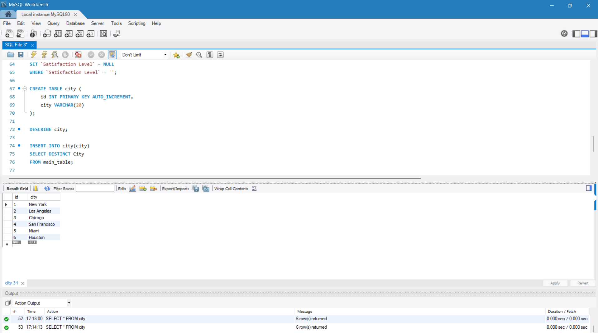
This MySQL Workbench screenshot demonstrates a concise SQL workflow: it creates a city table with an auto-incrementing id and a city column, then inserts unique city names from a source table. The result grid confirms that six cities were successfully added.
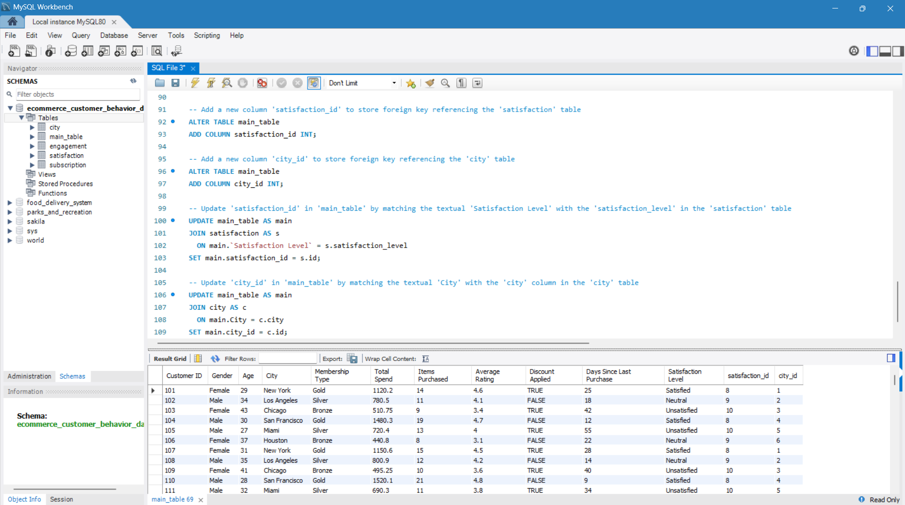
This MySQL Workbench screenshot shows a concise SQL workflow. It adds two columns to the main_table—satisfaction_id and city_id—and then updates these columns by joining with the satisfaction and city
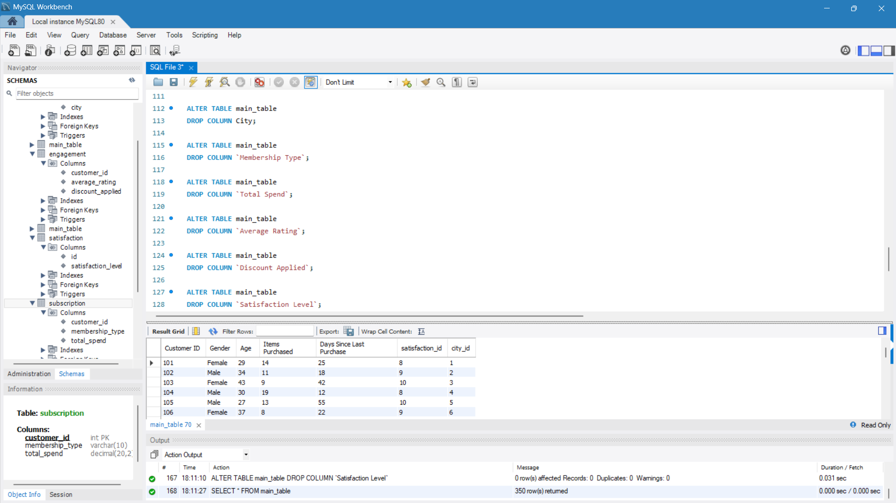
This MySQL Workbench screenshot shows the use of ALTER TABLE commands to drop several columns—City, Membership Type, Total Spend, Average Rating, Discount Applied, and Satisfaction Level—from the `main_table`. The updated table now displays key fields like Customer ID, Gender, Age, Items Purchased, Days Since Last Purchase, and the new reference columns, satisfaction_id and city_id.
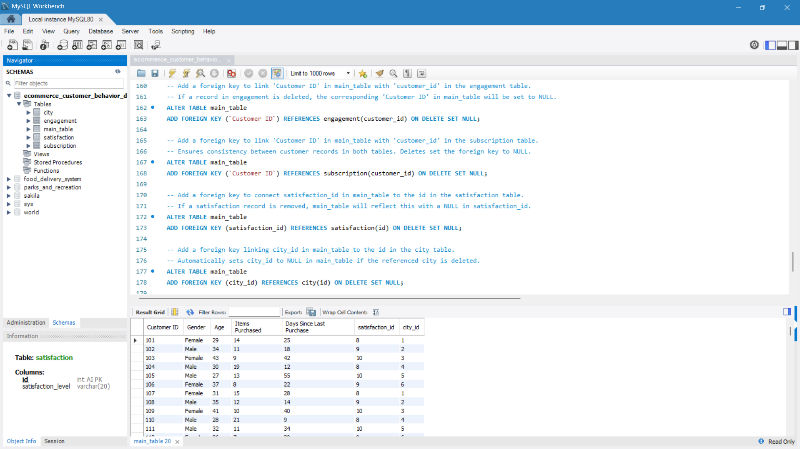
This MySQL Workbench screenshot shows the process of adding foreign keys to `main_table`. The SQL commands link `customer ID` to the `engagement` and `subscription` tables and connect `satisfaction_id` and `city_id` to the `satisfaction` and `city` tables—each with an `ON DELETE SET NULL` rule. The result grid confirms the updated table structure with these new relationships.
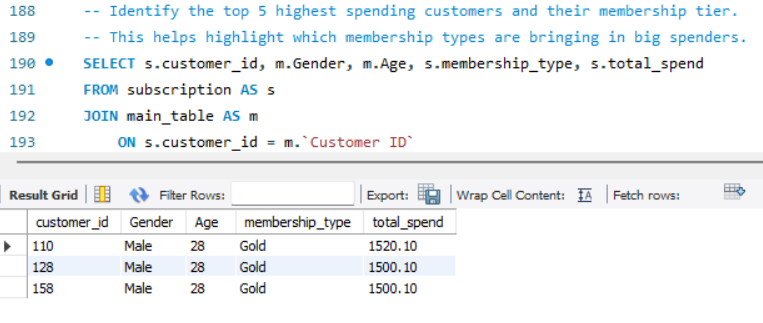
This image showcases a SQL query designed to identify the top spending customers by joining two tables. It retrieves key details—customer ID, gender, age, membership type, and total spend—providing a concise example of using SQL for data analysis.
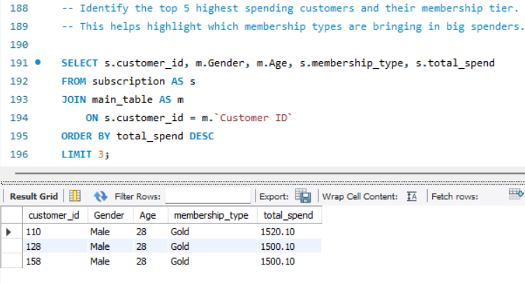
This image displays a SQL query that finds the top 3 highest spending customers. The query joins the `subscription` and `main_table` to select customer ID, gender, age, membership type, and total spend. Results are sorted in descending order of spending and displayed in a grid.
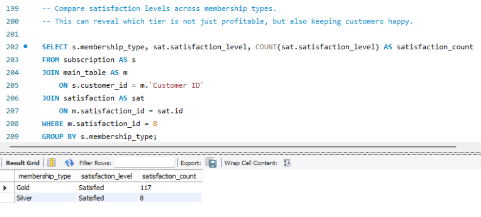
The image shows a SQL query comparing satisfaction levels across membership types. It highlights which membership tier balances profitability with customer happiness, providing insights based on satisfaction counts.
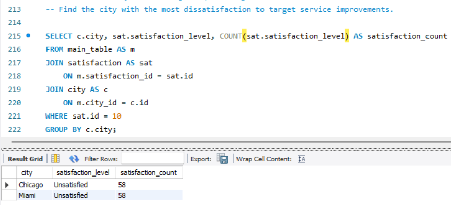
This image illustrates a SQL query that identifies cities with the highest number of unsatisfied customers to guide service improvements. The query joins three tables—main_table, satisfaction, and city—and filters for a specific dissatisfaction level (using sat.id = 10). It then groups the results by city, revealing that both Chicago and Miami report 58 unsatisfied responses each.
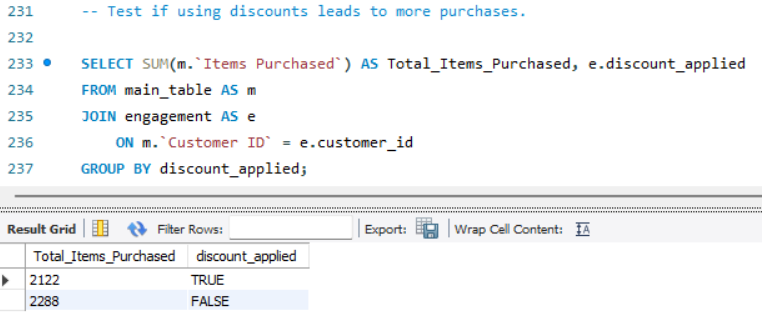
This MySQL Workbench image shows a SQL query designed to test if using discounts leads to more purchases. It joins the main_table and the engagement table based on customer ID, then groups and sums the Items Purchased by the discount_applied flag. The results indicate that when a discount is applied, the total items purchased sum to 2122, whereas without a discount, they sum to 2288.
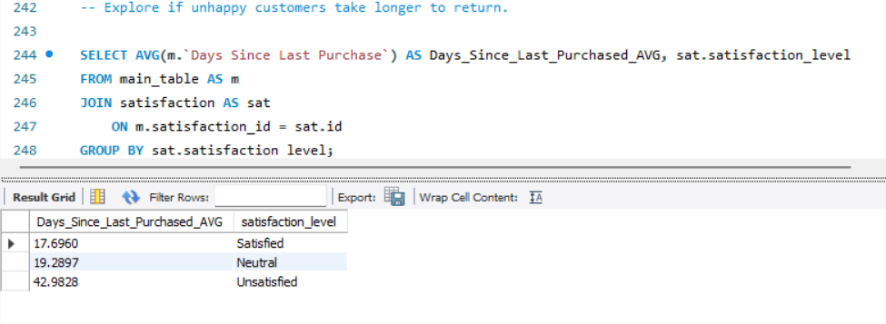
This image showcases a SQL query designed to investigate if unsatisfied customers take longer to return. It joins the main_table with the satisfaction table, groups by satisfaction level, and computes the average number of days since the last purchase. The results reveal that unsatisfied customers wait about 43 days, compared to roughly 17.7 days for satisfied customers and 19.3 days for neutrals.
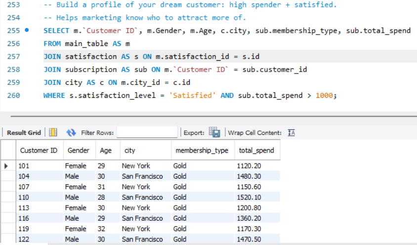
This image features a SQL query that builds a profile of a "dream customer." It joins data from four tables—main_table, satisfaction, subscription, and city—to select customer ID, gender, age, city, membership type, and total spend. The query filters for customers who are both satisfied and have spent over 1000, with the results neatly displayed in a grid.